{kind=link}
{kind=link}
{kind=link}
{kind=link}
{kind=link}
{kind=link}
{kind=link}
{kind=link}
{kind=link}
{kind=link}
Temple Gallery
ମନ୍ଦିର ଗ୍ୟାଲେରୀ

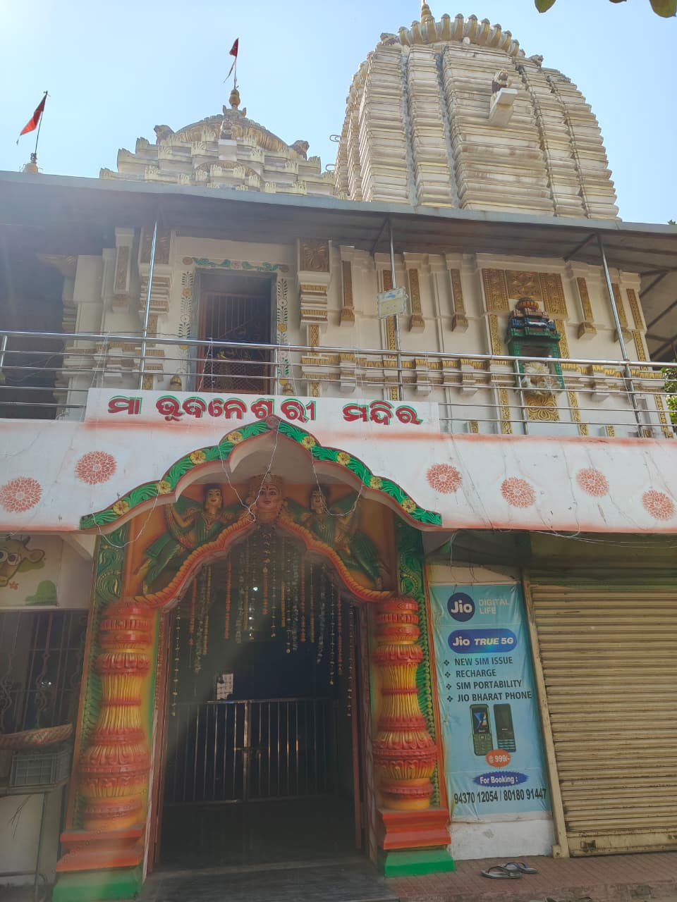
The Front Gate is the main entrance of the temple, welcoming devotees with divine presence and architectural elegance. It represents devotion and respect. Devotees pass through this gate with pure hearts to receive blessings, peace, and prosperity from the Goddess.
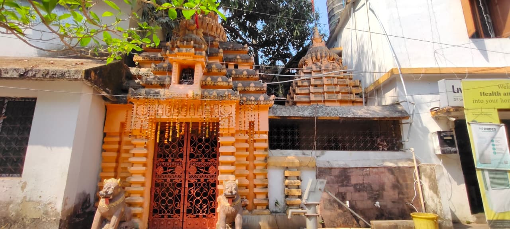
The East Gate is considered highly sacred as it faces the rising sun, symbolizing positivity and new beginnings. Devotees entering from this gate believe it brings spiritual energy, hope, and divine blessings from Maa Bhubaneswari.
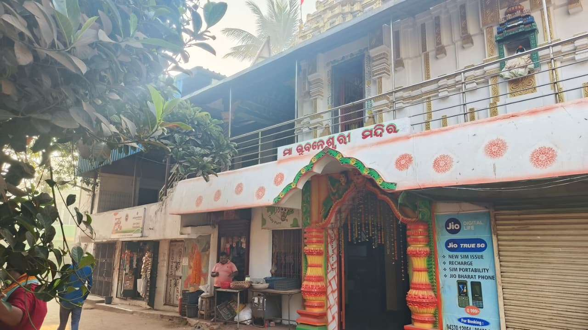
The South Gate of Maa Bhubaneswari Temple is an important entrance for devotees. It reflects traditional temple architecture and spiritual beauty. Devotees enter with faith and devotion, seeking the blessings of Maa Bhubaneswari for strength, protection, and peace in their lives.
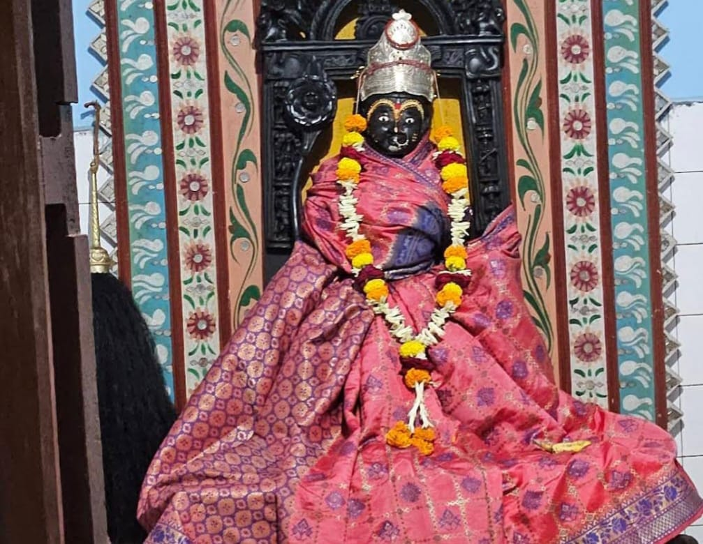
Maa Bhubaneswari is a powerful form of Goddess Shakti. She represents creation, protection, and compassion. Devotees worship her for strength, prosperity, wisdom, and spiritual peace. She blesses devotees with divine energy and guidance.
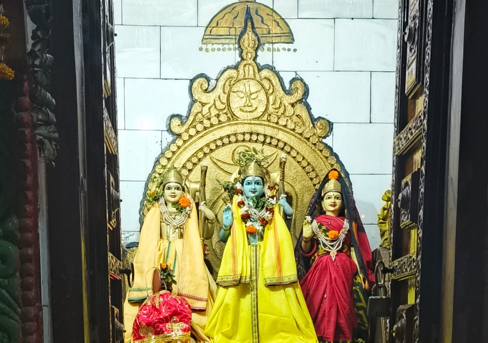
Lord Rama, Lakshmana, and Sita represent truth, duty, and devotion. They symbolize righteousness and ideal family values. Devotees worship them for peace, protection, and moral strength.
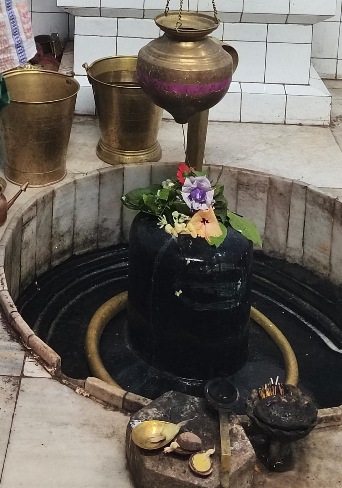
Lord Shiva is the Supreme God of transformation and destruction in Hinduism. He represents meditation, wisdom, and cosmic power. Devotees worship him for inner peace, strength, protection, and liberation from negativity and ignorance.
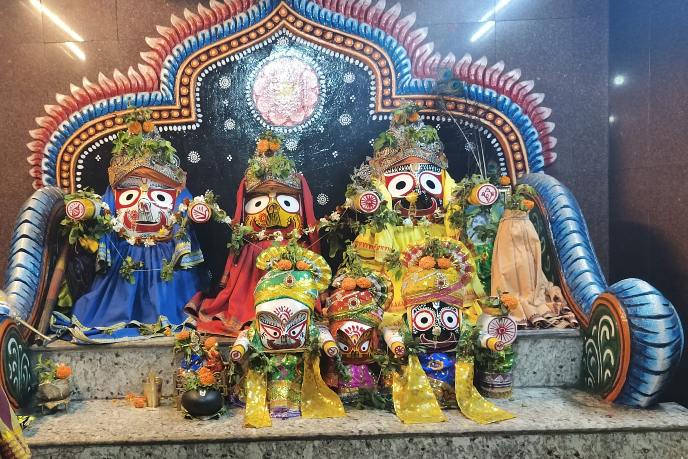
Lord Jagannatha, Balabhadra, and Subhadra symbolize unity, love, and divine protection. They are worshipped for happiness, peace, and prosperity. Devotees seek their blessings for spiritual growth and protection
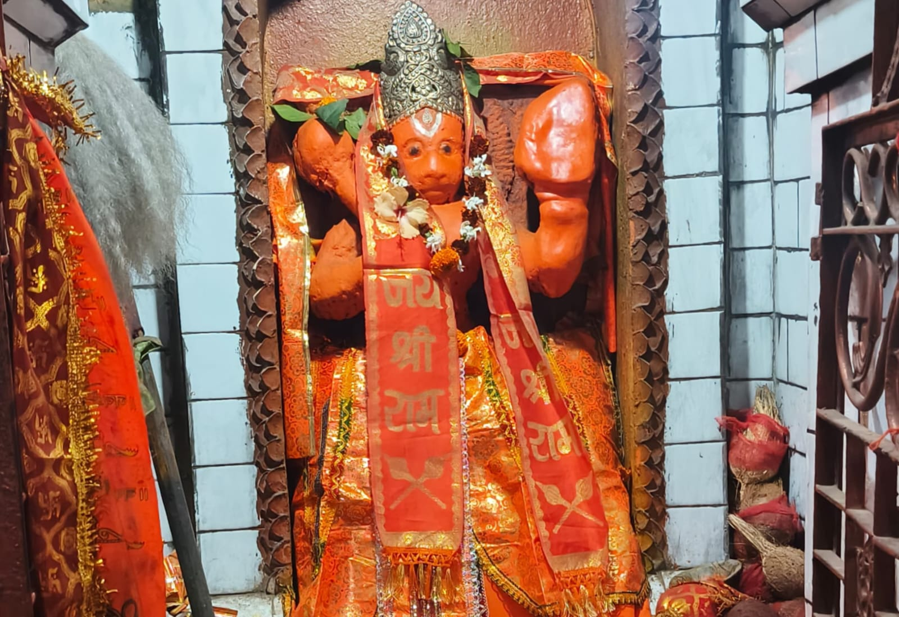
Lord Hanuman is the symbol of strength, devotion, and loyalty. He is a devoted follower of Lord Rama. Devotees worship him for courage, protection, success, and removal of obstacles.
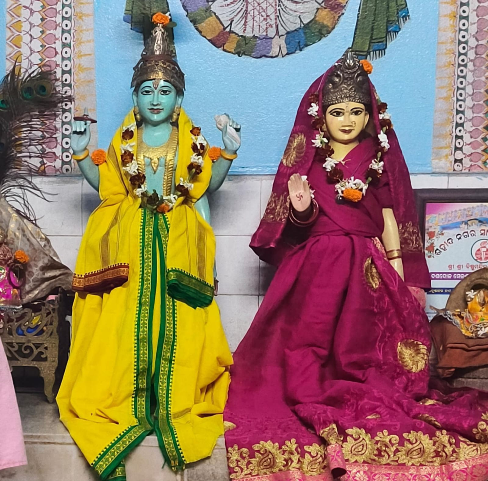
Goddess Lakshmi and Lord Narayana symbolize wealth, prosperity, and protection. They bless devotees with financial stability, happiness, and spiritual growth. Their worship brings success, peace, and divine blessings.

Goddess Parvati is the divine mother and symbol of love, devotion, and nurturing strength. She represents Shakti, the cosmic energy. Devotees pray to her for family harmony, courage, prosperity, and spiritual growth.
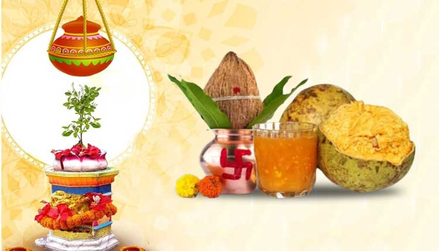
Pana Sankranti marks the Odia New Year and is celebrated at Maa Bhubaneswari Temple with special prayers and offerings. Devotees offer traditional pana drink to the Goddess. The festival symbolizes new beginnings, prosperity, and gratitude, bringing spiritual positivity and blessings to devotees.
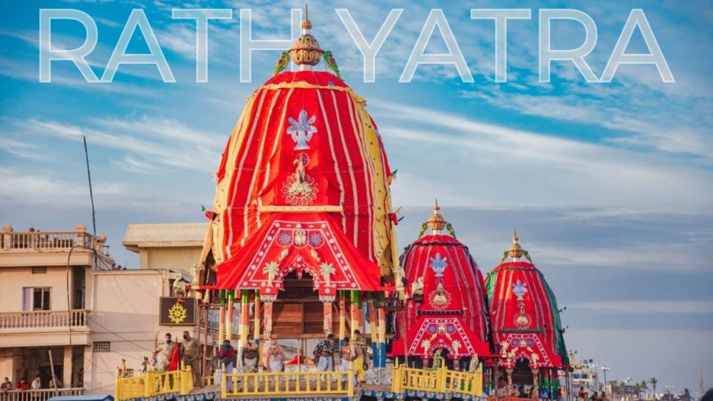
Rath Yatra celebrates the divine journey of Lord Jagannatha, Lord Balabhadra, and Devi Subhadra. Devotees offer prayers and participate in special temple rituals. The festival symbolizes devotion, unity, and surrender to God. People seek blessings for protection, happiness, and spiritual growth during this sacred celebration.
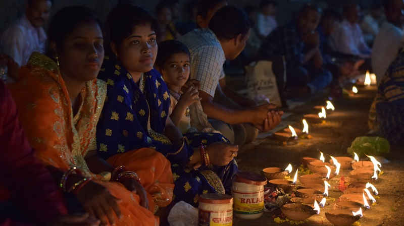
Maha Shivratri is celebrated with great devotion at Maa Bhubaneswari Temple. Devotees observe fasting, offer prayers, and perform special rituals. The temple is beautifully decorated, and devotees chant sacred mantras. This festival symbolizes spiritual growth, devotion, and seeking blessings for peace, strength, and prosperity.
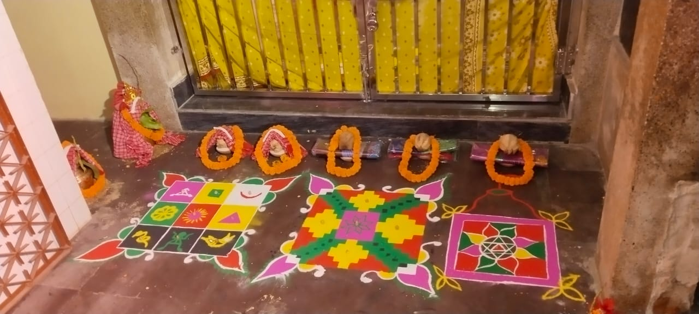
Daily temple rituals and worship ceremonies
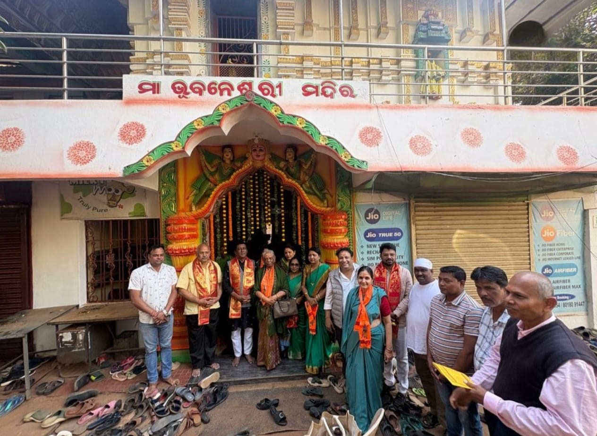
Sacred temple rituals and offerings
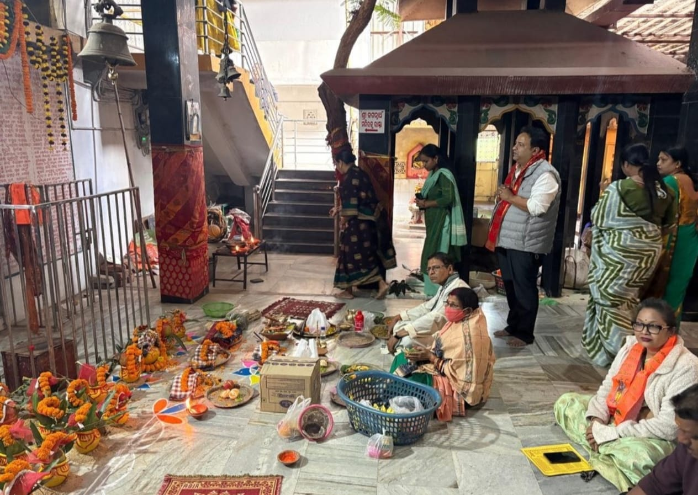
Traditional worship and prayer ceremonies